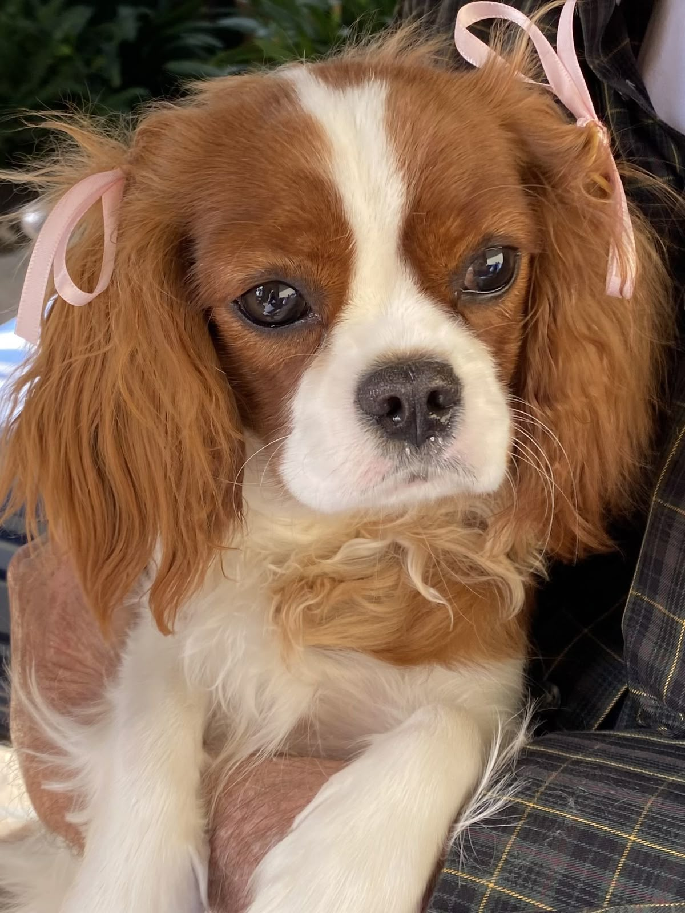

A raça tem origem no Reino Unido e era a favorita da nobreza britânica, especialmente dos reis Charles I e II;
São descritos como cães tranquilos que não exigem níveis extremos de atividade física, adaptando-se bem a apartamentos;
O Rei Charles II amava tanto seus cães que criou um decreto permitindo a entrada da raça em qualquer lugar público na Inglaterra, incluindo o Parlamento, lei que tecnicamente ainda seria válida;
Na era Tudor, eram chamados de "Cães de Tapete" porque eram usados pelas damas da nobreza para aquecer o colo e os pés, e até para atrair pulgas para longe de seus donos;
N Devido ao forte vínculo com os humanos, eles podem ficar tristes ou entediados se deixados sozinhos por longos períodos.